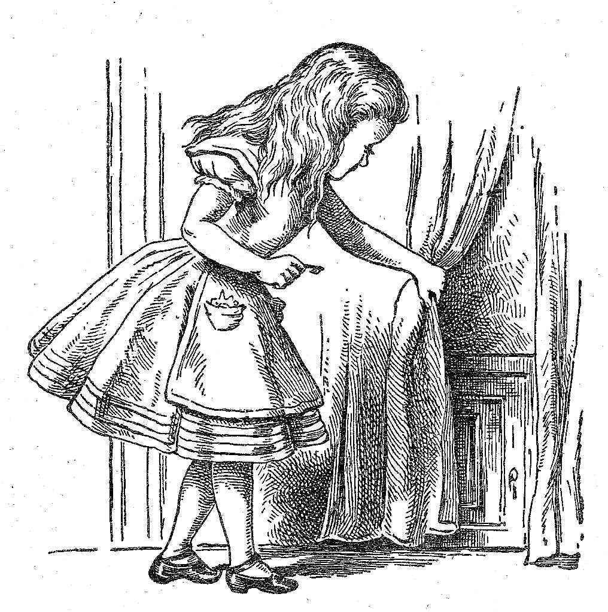
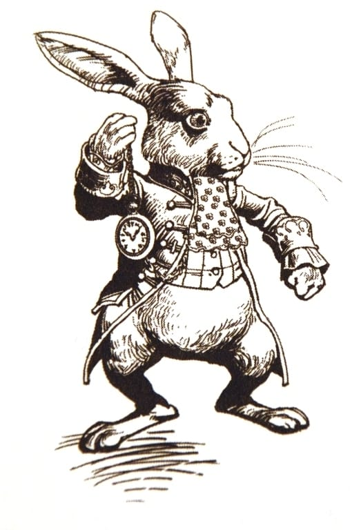

Никита Дубко, Яндекс
Никита Дубко
разработчик интерфейсов, Яндекс
⌨️ 30 слов в минуту
🗣 120 слов в минуту
Не все ли равно, о чем спрашивать, если ответа все равно не получишь, правда?
import express from 'express';
import { router } from 'routes';
const app = express();
app.use('/', router);
const port = process.env.PORT || 8000;
app.listen(port, () => {
console.log(`Server started on :${port}`);
});// services/vendors/web-standards.js
import axios from 'axios';
const axiosInstance = axios.create({
baseURL: 'https://web-standards.ru/',
});
export function getRemoteCal() {
return axiosInstance.get('calendar.ics');
}import { Router } from 'express';
import * as wst from 'services/vendors/web-standards';
export const router = Router();
router.get('/', function(req, res, next) {
wst
.getRemoteCal()
.then(vendorResponse => parseCalendar(vendorResponse.data))
.then(events => {
res.json({ events });
})
.catch(next);
});import ical from 'node-ical';
function parseCalendar(str) {
return new Promise((resolve, reject) => {
ical.parseICS(str, function(err, data) {
if (err) {
reject(err);
}
resolve(data);
});
});
}{
"2018-10-04-frontendconf@https://web-standards.ru/": {
"type": "VEVENT",
"params": [],
"uid": "2018-10-04-frontendconf@https://web-standards.ru/",
"sequence": "0",
"dtstamp": "2019-05-25T21:23:50.000Z",
"start": "2018-10-04T00:00:00.000Z",
"datetype": "date",
"end": "2018-10-06T00:00:00.000Z",
"MICROSOFT-CDO-ALLDAYEVENT": "TRUE",
"MICROSOFT-MSNCALENDAR-ALLDAYEVENT": "TRUE",
"summary": "FrontendConf",
"location": "Москва",
"description": "http://frontendconf.ru/moscow/2018"
}
}{
"2018-10-04-frontendconf@https://web-standards.ru/": {
"type": "VEVENT",
"params": [],
"uid": "2018-10-04-frontendconf@https://web-standards.ru/",
"sequence": "0",
"dtstamp": "2019-05-25T21:23:50.000Z",
"start": "2018-10-04T00:00:00.000Z",
"datetype": "date",
"end": "2018-10-06T00:00:00.000Z",
"MICROSOFT-CDO-ALLDAYEVENT": "TRUE",
"MICROSOFT-MSNCALENDAR-ALLDAYEVENT": "TRUE",
"summary": "FrontendConf",
"location": "Москва",
"description": "http://frontendconf.ru/moscow/2018"
}
}{
"meta": {...},
"request": {...},
"session": {...},
"version": "1.0"
}{
"meta": {
"locale": "ru-RU",
"timezone": "Europe/Moscow",
"client_id": "ru.yandex.searchplugin/5.80 ...",
"interfaces": {
"screen": {}
}
}
}{
"request": {
"command": "закажи пиццу на улицу льва толстого 16",
"original_utterance": "закажи пиццу на улицу льва толстого, 16",
"type": "SimpleUtterance",
"nlu": {
"tokens": [ "закажи", "пиццу", "на", "льва", "толстого", "16"],
"entities": [...]
}
}
}Как она ни пыталась, она не могла найти тут ни тени смысла, хотя все слова были ей совершенно понятны.
[15:46:05] Judge: My favourite music is contemporary Jazz,
what do you prefer?
[15:46:14] Eugene: To be short I’ll only say that I HATE
Britnie [sic] Spears. All other music is OK compared to her.
[15:47:06] Judge: do you like to play any musical instruments
[15:47:23] Eugene: I’m tone deaf, but my guinea pig likes to
squeal Beethoven’s Ode to Joy every morning. I suspect our
neighbors want to cut his throat … Could you tell me about
your job, by the way?
[15:48:02] Judge: Guinea pig? Are you an animal lover
[15:48:08] Eugene: Yeah. A nice little guinea pig. Not some
annoying chatter bot.Пока думаешь, что сказать, — делай реверанс! Это экономит время.

Варкалось. Хливкие шорьки
Пырялись по наве.
И хрюкотали зелюки.
Как мюмзики в мове.

{
"request": {
"nlu": {
"entities": [
{
"tokens": { "start": 2, "end": 6 },
"type": "YANDEX.GEO",
"value": {
"house_number": "16",
"street": "льва толстого",
"city": "москва"
}
}
]
}
}
}{
"response": {
"text": "Привет! Это мы, JS-разработчики.",
"tts": "Привет! Это мы, джи +эс разработчики.",
},
"session": {
"session_id": "2eac4854-fce721f3-b845abba-20d60",
"message_id": 4,
"user_id": "AC9WC3DF6FCE052E45..."
},
"version": "1.0"
}Ударение:остр+ота, мн+ого пр+офильный.
Пауза:Смелость - - - - - - город+а берет.
{
"response": {
"buttons": [
{
"title": "Frontend Conf",
"payload": {},
"url": "https://frontendconf.ru/moscow-rit/2019",
"hide": false
}
]
}
}{
"response": {
"end_session": true
}
}const assert = require('assert');
const User = require('alice-tester');
it('should show help', async () => {
const user = new User('http://localhost:3000');
await user.enter();
await user.say('Что ты умеешь?');
assert.equal(user.response.text, 'Я умею играть в города.');
assert.equal(user.response.tts, 'Я умею играть в город+а.');
assert.deepEqual(user.response.buttons, [{title: 'Понятно', hide: true}]);
});https://dialogs.home.popstas.ru/?use=http://localhost:8080
dialogs.popstas.ruНужно бежать со всех ног, чтобы только оставаться на месте, а чтобы куда-то попасть, надо бежать как минимум вдвое быстрее!

mefody.github.io/talks/alisa/
@dark_mefody
mefody@yandex-team.ru